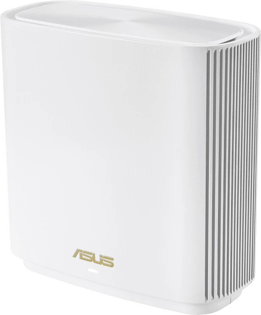
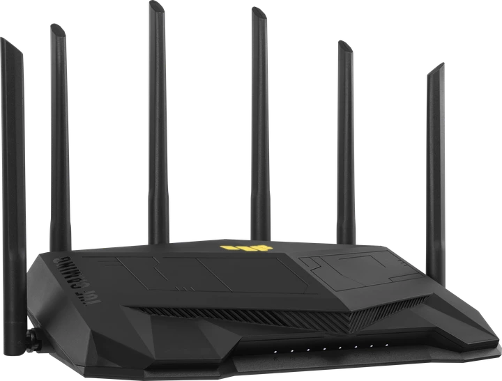
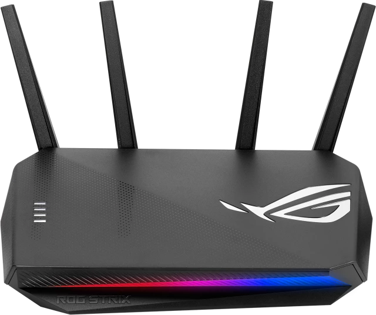
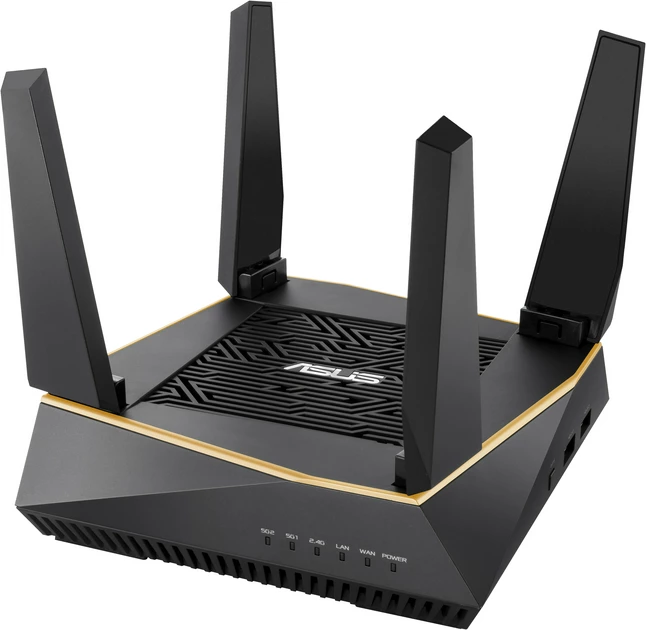

Routers are used to connect both similar and dissimilar LANs. Router operates on the network layer of OSI model using the physical layer, data link layer and network layer to provide connectivity, addressing and switching. These are highly intelligent devices. In case of TCP/IP network, Internet Protocol (IP) is used as addresses for network; this is the router which interprets the IP address and delivers the packet reliably.Autor

Now, we may say that router transmits the network layer data and therefore, provides transmission of data between LANs that use different data link protocols but using the same network layer protocol. Because of this, Etl1ernet can be connected with token ring network using routers. Additionally, routers provide connectivity La MAN (SMDS) and WAN (X.25, Frame Relay and ATM). Routers are protocol sensitive; typically supporting multiple protocols and large and varying packet sizes such as might be involved in supporting both Ethernet and Token Ring.
A network consisting of routers can have multiple paths unlike bridges. Normally, the shortest of all paths in the network is used to transfer packets.

Consider a case for data transmission from computer 1 to computer 5 on the network. When computer 1 starts sending the data, it compares its IP address with computer 5, i.e. destination computer addresses to know whether computer 5 lies on its own network or not. When computer 1 finds that it is not on its network, it transmits a data packet containing the MAC address R of router in this case. When router receives this packet, it sets the MAC address of computer 5 and sends packet to the port which has the same IP destination address as given in data packet. In this manner computer 5 receives the data packet.
